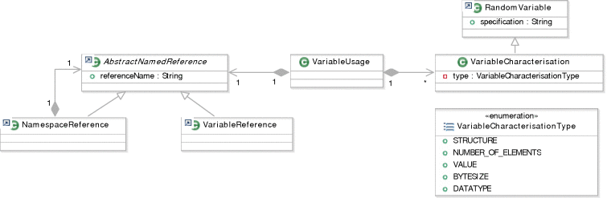
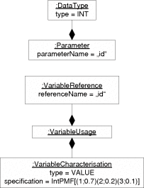

Next: Related Work
Up: Parameter Model
Previous: Example
Contents
Index
The PCM parameter model (Figure 3.37) allows characterising actual parameters of a component service by associating a VariableUsage with a formal Parameter. The formal Parameter is part of an interface from the repository model (see Section 3.2.2) and referenced from the parameter model using an AbstractNamedReference. This may be a NamespaceReference or a concrete VariableReference, which contains the name of the parameter to be characterised. With NamespaceReferences more complex data structures such as composite data types or the inner elements of collections can be referenced. For example, an object 'customer' containing two strings 'name' and 'address', can be characterised by providing characterisations for both 'customer.name' and 'customer.address'.
Figure 3.37:
Parameter Model
|

|
Note, that it is only necessary to characterise parameters if they indeed influence performance or reliability. Many parameters do not change resource usage or alter the control flow between components, and their characterisation can be omitted. Characterising every parameter of the services in a complex component-based architecture would require too much effort and not support performance analysis.
Many parameters can be characterised by simply providing a constant value for them. However, as motivated in the example above, in some situations it is useful to characterise parameters not only with constant values but with probability distributions to allow more fine-grained predictions. Thus the attributes of parameters are characterised with VariableCharacterisation in the PCM, which inherit from RandomVariables (see Section 2.6).
Different attributes of parameters can be characterised in the PCM parameter model. Primitive data types can be characterised with their value, byte size, or data type. To demonstrate the modelling capabilities, consider the examples for primitive parameters in Figure 3.38. Note, that these examples are illustrated with class diagrams instead of the annotated activities used before.
Example 3.14
In Figure
3.38(a), a probability distribution for the
value of the integer parameter named ''id'' has been specified. The parameter receives the values 1, 2, or 3 with probabilities of 70%, 20%, and 10% respectively. Figure
3.38(b) shows a parameter named ''inputFile'', whose
size in bytes has be specified as a constant value (20). Via inheritance, extensions of certain parameters may be passed to a component service, thus the concrete
data type may additionally be characterised by a domain experts. In the example in Figure
3.38(c), the parameter ''shape'' of type GraphicObject may become a circle, triangle, or rectangle, which may alter the response time of the service that is supposed to draw these graphics. It is also possible to specify multiple characterisations of a single parameters, for example to specify the value
and byte size.
Figure 3.38:
Primitive Parameter Characterisation Examples
[]

[]

[]

|
Example 3.15
For
collection parameters, it is more difficult to characterise the value domain. The performance-influence of collections like array, tree, or hash can sometimes be characterised simply by the
number of elements. Thus, it may be appropriate for such parameters to specify probability distributions over the number of elements. Consider the example in Figure
3.39(a): the number of elements in the collection ''niceTree'' of type RedBlackTree has been specified with a probability distribution, i.e., the tree contains 10, 100, or 1000 nodes with probabilities of 10%, 30%, and 60%. The value, byte size or data type of a collection can be characterised as explained above. In Figure
3.39(a), the size of the collection has additionally been specified.
Figure 3.39:
Collection Parameter Characterisation Examples
|
|
Besides the number of elements, it is sometimes useful to specify the structure of a collection, if it influences QoS properties of a component service. For example presorted arrays may by sorted quicker than unsorted arrays or the deletion duration of an element in a tree may depend on the balance of the tree. In Figure 3.39(b), the structure of the array list ''luckyNumbers'' has been characterised as sorted with a probability of 10% and unsorted with a probability of 90%. Additionally, the number of elements in the array list has been characterised with the constant value of 10.
To ease modelling, collection contain may contain one inner VariableUsage, which shall representatively model the inner elements of a collection. In the example in Figure 3.39(c), the collection ''interestingFiles'' is characterised with its number of elements. Additionally, the inner parameter usage representatively characterises a single file within the collection. Here, the files in the collection have a size in bytes between 10 and 40 bytes.
Next: Related Work
Up: Parameter Model
Previous: Example
Contents
Index
Snowball
2007-03-16
 []
[]
 []
[]